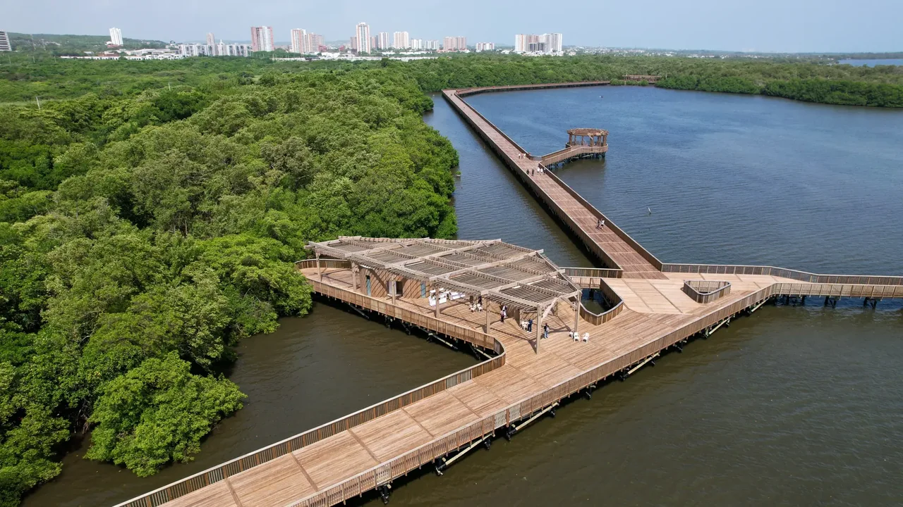
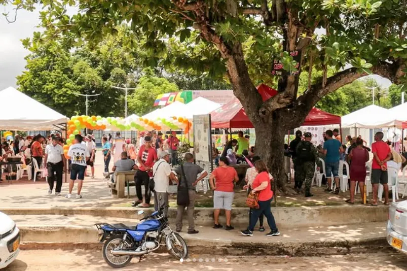
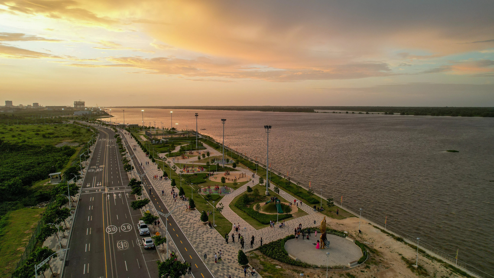
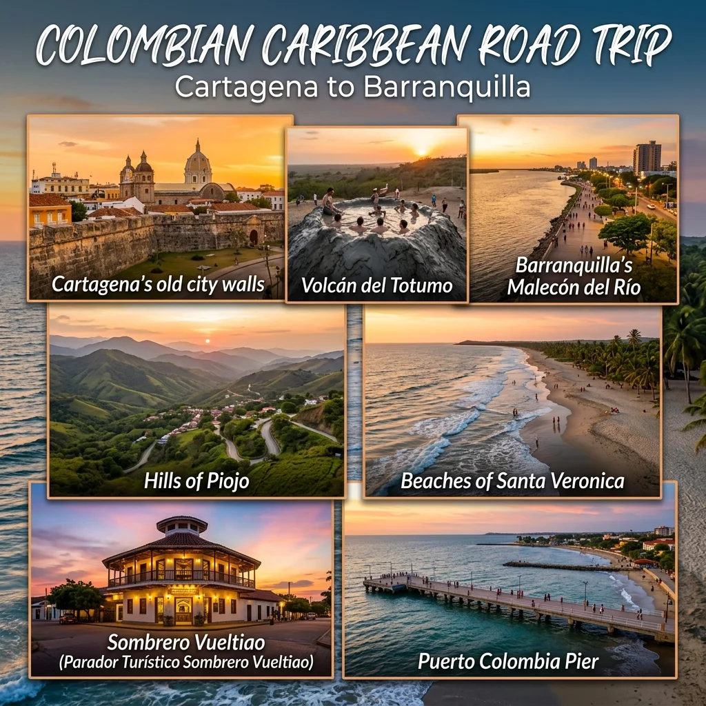

Planifica tu viaje
Comenzar

Rutas existentes
Explorar

Ruta turística por los municipios del corredor vial
Expandiendo horizontes
Mi Ruta Guardada
Cargar Ruta
Rutas Existentes
Descubre los recorridos históricos, culturales y artesanales más emblemáticos de la región costera.

Nuestros Municipios
Explora la riqueza cultural, gastronómica y natural de las 7 joyas del corredor vial entre Cartagena y Barranquilla.